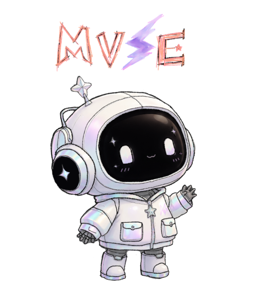

The Creative Companion

✦All-in-one package for your creative needs!
[ Spotlight ]
MUSE (The Creative Companion) is a small, portable, humanized AI robot designed to help people express, explore, and develop their creativity. MUSE combines several creative technologies into one companion, including a digital sketch system, music pad, motion sensors, camera, voice assistant, and creative AI. Instead of being designed as just another device or tool, MUSE is meant to feel like a personalized creative companion that users can interact with and bring wherever they go. MUSE can listen, talk, observe, learn the user's creative preferences, and help transform simple ideas into different forms of art and creative projects.
[ Highlight ]
It can help someone turn:
One of MUSE's biggest features is personalization. When users first receive their MUSE, they can customize how their companion looks and interacts.
Users can select how they would like MUSE to be referred to.
This allows each MUSE to feel more personal to its owner.
Every user can give their MUSE a name of their choice. For example, one person's MUSE could be named Luna, while another person's could be named Milo. The name becomes part of MUSE's personalized identity, making every MUSE feel different from another, even though they are part of the same product line.
Users can also customize aspects of MUSE's personality. For example, a user could make their MUSE more:
This allows users to choose what kind of creative companion they would enjoy interacting with.
If multiple people own MUSE robots, users can control how much their MUSE interacts with other MUSE units. For privacy and personal preference, users can choose interaction settings such as:
This allows users to control their MUSE's connections and interactions with other MUSE companions.
Customization items can be purchased from RZNZ'S MUSE STORE ✨ — this is where users can personalize the appearance and abilities of their MUSE.
MUSE can have different magnetic wigs that can easily be attached and removed. Users can choose different:
This means users can completely change the appearance of their MUSE whenever they want.
Users can purchase accessories for their MUSE, such as:
This allows each MUSE to have its own unique style.
MUSE can wear different clothing collections based on the user's preferred style. There can be:
The outfits help make MUSE feel even more customizable and collectible.
✨ What are MUSE Skill Chips?
MUSE Skill Chips are special upgrade chips that give MUSE access to additional advanced creative
abilities. MUSE already has its basic creative functions, but Skill Chips allow users to unlock
more specialized features.
🔐 The Chip Compartment
MUSE has a compact and discreet sliding chip compartment integrated into its body. From the
outside, the compartment looks clean and minimal, similar to the sliding battery compartment found
on some electronic devices. When opened, users can insert Skill Chips into the slots.
MUSE can use:
This means users can combine different skills depending on what they are working on. For example, a 🎬 Director's Chip + ✍️ Writer's Chip combination could help a user develop a movie concept. Or a 💃 Dancer's Chip + 🎵 Musician's Chip combination could help a user create choreography for an original song.
Gives MUSE advanced knowledge related to filmmaking, directing, storyboarding, scene planning, camera concepts, and multimedia production. MUSE can help users develop their own:
Gives MUSE advanced creative writing abilities. It can help users create:
This chip is especially useful for people who enjoy storytelling and creating fictional worlds.
Gives MUSE advanced abilities related to dance and movement. It can help users:
It can also unlock advanced movement functions that allow MUSE to dance alongside the user.
Gives MUSE advanced music-related abilities. It can help users:
This chip is designed for users who enjoy singing, songwriting, or creating music.
Gives MUSE advanced skills related to visual art. It can help users:
This makes it especially useful for artists, designers, and creative students.
What makes MUSE special is that it doesn't focus on just one type of creativity. Most creative tools are designed for only one purpose. For example, a drawing tablet is mainly for art, a music device is mainly for music, and a camera is mainly for photography. But MUSE connects different creative fields together.
An idea can begin as a:
MUSE connects creativity across different forms of expression.
I would invent MUSE — The Creative Companion because creativity does not always come from just one skill or one type of art. An idea can start from a drawing, a song, a dance movement, a photograph, or even a simple thought. However, these creative ideas can sometimes be difficult to organize or develop.
MUSE would help people connect their different creative skills and transform simple ideas into bigger projects. I chose this invention because it connects many of the creative fields that I am personally interested in, such as drawing, music, dancing, photography, storytelling, filmmaking, and creative design.
Instead of replacing human creativity, MUSE is designed to support and inspire it.
✨ MUSE doesn't create your imagination for you — it helps you bring it to life.